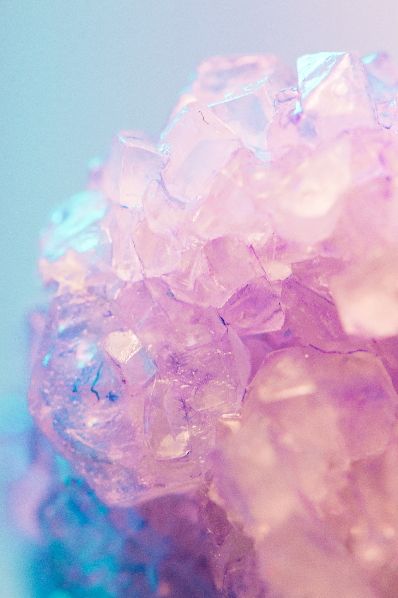

WEBDESIGN
Fotografi
Video
Grafisk design
Webdesign

Min interesse for fotografi startede i en tidlig alder. Jeg mener der er noget meget smukt ved at indkapsle en stemning eller en følelse gennem fotografi. Et billede siger mere end tusind ord - dette ordsprog kan jeg genkende mig selv i. Jeg er inspireret af det umiddelbare øjeblik og holder af at fotografere mennesker. Derudover har jeg en stor interesse for produktfotografi og processen at få et produkt til at fremstå bedst muligt.
I forlængelse af min interesse for fotografi begyndte jeg at udvide min horisont og begyndte at udarbejde små videoer. Jeg har primært haft fokus på markedsføring af produkter gennem video og har derfor brugt meget tid på at udarbejde skudlister tilpasset det specifikke produkt med udgangspunkt i ingredienserne. Derudover holder jeg af - i tråd med fotografi - at indkapsle øjeblikke og store øjeblikke i form af video.
På mit nuværende studie arbejder vi i høj grad med webdesign. Vi bliver undervist i både kode, farvevalg, designvalg og meget mere. Denne viden bruger jeg i alle mine projekter og har i den forbindelse udarbejdet design til forskellige websites I Adobe XD. Du kan her se et udpluk af mine webdesign på denne side. Under disse projekter har jeg fået mulighed for at være projektleder samt have forskellige ansvarsområder som ansvarlig for tidsplan, kode og deadlines.
I forlængelse af den viden jeg tilegner mig gennem min undervisning har jeg udviklet forskellige logoer - både til fiktive og eksisterende virksomheder. Jeg har samtidig brugt mange arbejdstimer i Photoshop og har tilegnet mig evner især inden for foto manipulation. Jeg har udover dette arbejdet i Lightroom Classic, InDesign, Illustrator og Canva.
I en verden hvor sociale medier er vores primære måde at brande virksomheder på, finder jeg det interessant at blive klogere på branding herigennem. Jeg forsøgerat holde øje med trends, tendenser og nyheder. I forbindelse med dette har jeg været en del af et team der har haft til opgave at udarbejde Instagram opslag til en App der har til formål at hjælpe unge med deres økonomi.
KONTAKT
Mobil: +45 24 98 76 22
Mail: claudianeble@hotmail.com
LinkedIn:
Klik her
Jeg håber at min portfolio har vakt jeres interesse. I er mere end velkomne til at kontakte mig ved eventuelle spørgsmål :-)